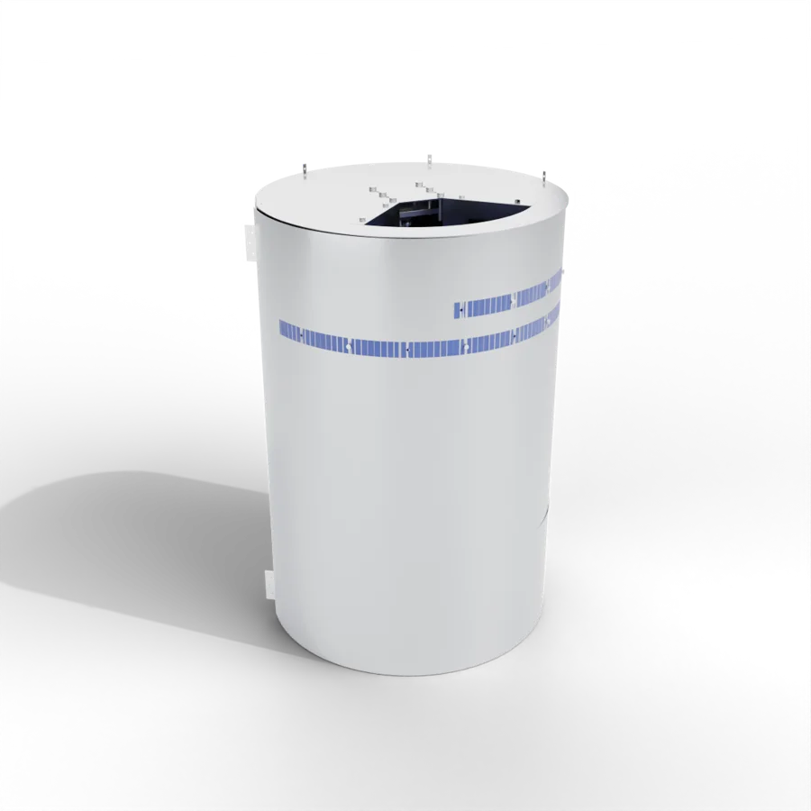

Mülltrennung, die mitdenkt.
Wir sind drei Schüler:innen der HTL Spengergasse in Wien und entwickeln Lösungen, mit denen Müll ohne Nachdenken richtig getrennt wird.
Unser erstes Projekt
SortIQ

Der Mistkübel, welcher den Müll selbst trennt. Eine Kamera erkennt den Gegenstand und ein KI-Modell direkt am Gerät sortiert ihn ins richtige Fach.
Über uns
Viele wissen nicht sicher, wohin ihr Müll gehört. Wir wollen, dass richtiges Trennen so einfach wird, dass niemand mehr darüber nachdenken muss.
Einwerfen statt Nachdenken
Man muss die Trennregeln nicht kennen. Die Technik erkennt den Gegenstand und erledigt die Trennung in wenigen Sekunden.
Intelligenz ohne Cloud
Unsere KI läuft direkt am Gerät. Dadurch bleiben die Daten vor Ort und es fallen keine laufenden Kosten an.
Warum das wichtig ist
Wertstoffe landen im Restmüll. Dabei verlangt die EU, dass die Hälfte der Kunststoffverpackungen recycelt wird.
Das Team
An der HTL Spengergasse verbinden wir IT, Technik und Wirtschaft.
Paul Fiala
Projektleitung, Konstruktion und Mechanik
Julia Hammerschmidt
KI-Modell
David Kutis
Steuerung
Partner
Wir entwickeln SortIQ im Rahmen unserer Diplomarbeit. Getestet wird der Prototyp im Frühjahr 2027 direkt vor Ort im Museum.
- HTL SpengergasseSchule und Betreuung
- Bezirksmuseum HietzingTestort für den Prototyp
Interesse an unseren Projekten?
Ob Museum, Schule, Büro oder Gemeinde, wir freuen uns über Fragen, Feedback und Ideen für einen Test bei euch.
info@wastelligence.com